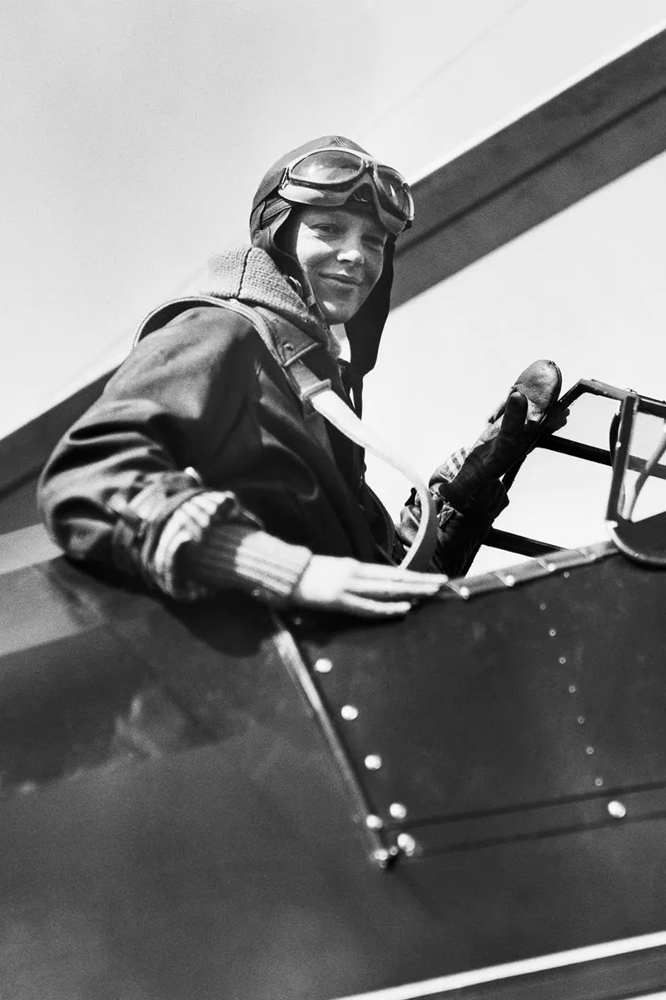

International Women's Day
Home
Ada Lovelace (1815-1852)
Marie Curie (1867-1934)
Amelia Earhart (1897-1937)
Citations
Amelia Earhart

In 1928, Amelia Earhart was the first female pilot to fly across the Atlantic Ocean. She was also the 16th woman to be given a pilot's license. She mysteriously disappeared during a flight in 1937, and was pronounced legally dead two years later.